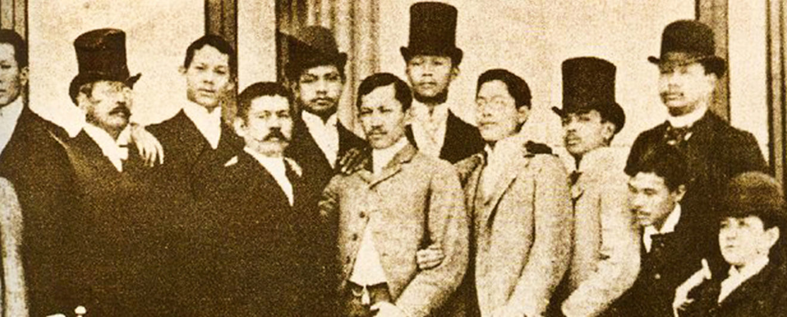

Visual Chronicle
Key moments and artifacts from the Propaganda Movement era

La Solidaridad
The bi-weekly newspaper that became the voice of Filipino reformists in Europe, publishing essays that would ignite a revolution.

The Pen as Weapon
Rizal writing his revolutionary essays and novels in Europe, wielding his pen with surgical precision against colonial injustice.

Ilustrados
The Reformists
Filipino intellectuals united in Europe: Rizal, Marcelo H. del Pilar, Graciano López Jaena, and others who dreamed of a reformed Philippines.